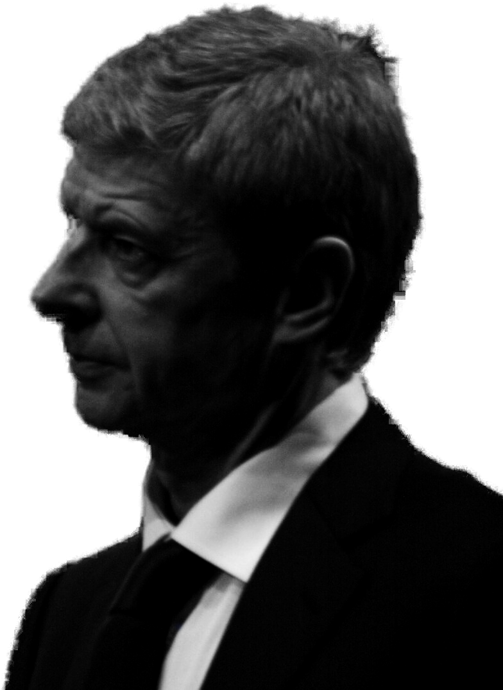
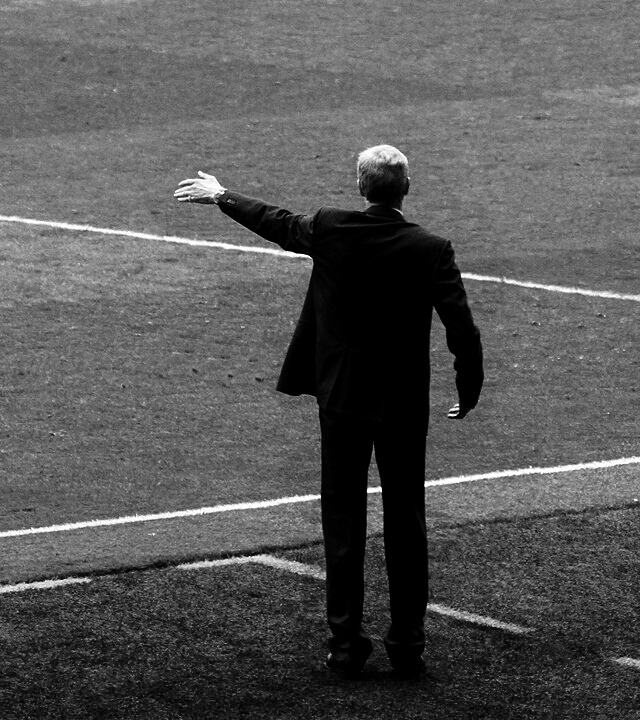

EWOOD PARK, BLACKBURN · FOTO DE 2011 · RONNIE MACDONALD · CC BY 2.0
ARSÈNE WENGER
12/10/1996 · BLACKBURN – ARSENAL

FOTO DE 2009 · GORDON FLOOD · CC BY 2.0

WENGER EN LA BANDA · FOTO DE 2012 RONNIE MACDONALD · CC BY 2.0
FOTOS: RONNIE MACDONALD (CC BY 2.0), GORDON FLOOD (CC BY 2.0), JEFFERY MARTIN (CC0), VÍA WIKIMEDIA COMMONS VESTUARIO, MALETÍN, CHOCOLATINA, AUTOBÚS, MARCADOR Y PLATO: RECREACIÓN